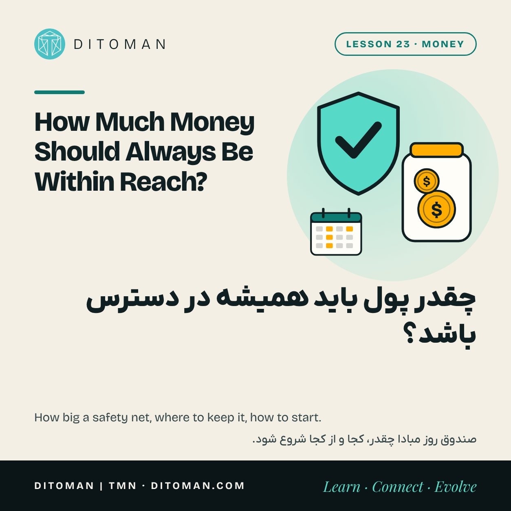
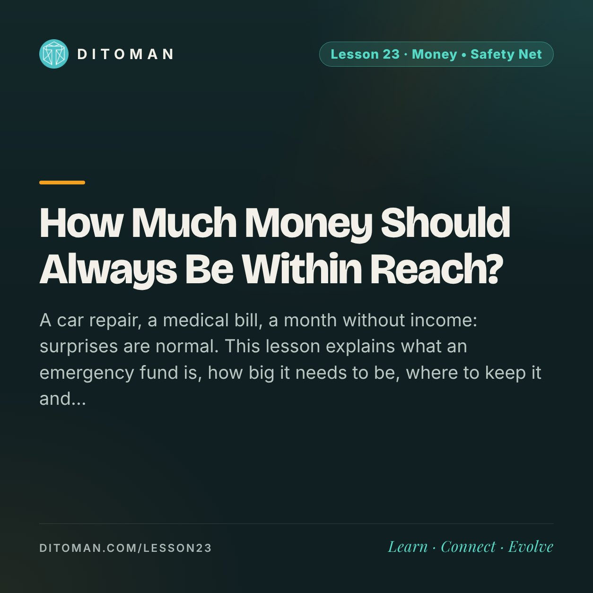

应该随时备有多少钱？
چقدر پول باید همیشه در دسترس باشد؟
汽车修理、医疗账单、一个月没有收入：意外是常态。本课解释什么是应急基金、需要多大、存放在哪里以及如何从小处开始。
تعمیر ماشین، قبض درمان، یک ماه بدون درآمد: غافلگیری عادی است. این درس توضیح میدهد صندوق روز مبادا چیست، چقدر باید باشد، کجا نگهش داریم و چطور کوچک شروع کنیم.
课程内容
محتوای درس
可用英文或波斯文阅读本课。
درس را به فارسی یا انگلیسی بخوانید.
两个人薪水相同。有一天两人都遇到一笔意外账单。第一个人从一小笔储备中付掉，继续生活。第二个人去借钱，其他还款逾期，花了几个月才赶上。
他们之间的差别不是收入，而是意外到来之前就已经有的储备。
01. 什么是应急基金
应急基金是只用于计划外、必要支出的资金：突发的维修、医疗账单、两份工作之间的空档。它不是用于度假、打折或投资的。
它的作用是把危机变成不便。意外来临时，你从基金中支付，而不是以高价借款，如第19课所警告的那样。
02. 有应急基金的人多吗？
在美国，联邦储备系统每年都会询问家庭。在其2024年的调查中，63%的成年人表示他们会用现金或现金等价物支付一笔400美元的紧急开支。55%的人表示他们已存够覆盖三个月开支的钱。
换个角度说，在世界上最富有的国家，很大一部分成年人会因一个小意外而吃力。有储备是常识，但并不是普遍做法。
- 1一小笔缓冲，应对典型的意外
- 2一个月的必要开支
- 3三个月，收入不稳定的话更多
- 4使用之后：先补足，再考虑新的想要
03. 应该有多大？
没有唯一正确的大小。美国消费者金融保护局没有给出固定目标；它说合适的金额取决于你的情况，并建议看看你以前遇到过的意外开支。
许多指南用三到六个月的必要开支作为经验法则，联邦储备系统的“三个月”问题也遵循同样的思路。把它当作方向，而不是考试。
一种实用的思路是分步骤。首先，一小笔缓冲，应对典型的意外。然后是一个月的必需开支。再然后是三个月，如果你的收入不稳定或你要供养他人，则更多。
04. 存放在哪里
基金必须安全、可及，并且花起来稍微有点不方便。CFPB 把银行或信用合作社账户列为最安全的地方之一，还有不会透支的预付卡，或存放在安全处的现金，并警告现金可能丢失或被盗。
单独的账户有帮助，因为它在平常的日子里让这笔钱不在视线之内。
想想这笔基金必须做什么：下个月还在，数额不变。价格可能大幅下跌的资产，如第10课和第18课所示，不适合这项工作。这不是关于任何产品的建议，只是对这笔钱的任务的描述。
05. 如何从小处开始
CFPB 强调，即使金额很小也能提供一定的保障，并建议养成习惯，而不是大动作。
自动化： 在收入到账当天设一笔定期转账，无论多小。
存下一次性的钱： 退税、礼金、奖金。
关注现金流： 在较宽裕的一周，把多出来的放进基金。
06. 使用它，并补足它
动用基金不是失败。这正是它存在的目的。事后，把补足它作为接下来几个月的首要目标。
提前决定什么算紧急情况。你想要的东西打折，不算。
本课要点
应急基金把危机变成不便。
没有唯一正确的大小。从一小笔缓冲开始，再到一个月，再到三个月。
保管要安全、可及，并略微不那么容易动用。
自动化小额转账；习惯比金额更重要。
使用它就是它的目的。事后把它补足。
دو نفر حقوق یکسان دارند. یک روز هر دو با یک هزینهی غیرمنتظره روبهرو میشوند. اولی از یک ذخیرهی کوچک میپردازد و زندگی را ادامه میدهد. دومی قرض میگیرد، از پرداختهای دیگر عقب میافتد و ماهها طول میکشد جبران کند.
فرق این دو درآمد نیست. ذخیرهای است که پیش از رسیدن غافلگیری وجود داشت.
۰۱. صندوق روز مبادا چیست
صندوق روز مبادا پولی است که فقط برای هزینههای ضروری و پیشبینینشده کنار گذاشته میشود: تعمیر ناگهانی، قبض درمان، فاصلهی بین دو کار. برای تعطیلات، حراج یا سرمایهگذاری نیست.
کارش این است که بحران را به یک ناراحتی تبدیل کند. وقتی غافلگیری میرسد، از صندوق میپردازید و با بهرهی سنگین قرض نمیگیرید؛ همان چیزی که درس ۱۹ هشدارش را داد.
۰۲. داشتنش چقدر رایج است؟
در آمریکا فدرال رزرو هر سال از خانوارها میپرسد. در نظرسنجی ۲۰۲۴ او، ۶۳٪ بزرگسالان گفتند یک هزینهی اضطراری ۴۰۰ دلاری را با پول نقد یا معادل آن میپردازند. و ۵۵٪ گفتند پولی کنار گذاشتهاند که هزینهی سه ماه را بپوشاند.
از طرف دیگر، سهم بزرگی از بزرگسالان در ثروتمندترین کشور دنیا هم با یک غافلگیری کوچک به مشکل میخورند. داشتن ذخیره عقل سلیم است، ولی رایج نیست.
- ۱یک ذخیرهی کوچک برای یک غافلگیری معمولی
- ۲هزینهی ضروری یک ماه
- ۳سه ماه، یا بیشتر اگر درآمد نامنظم است
- ۴بعد از استفاده: اول پر کنید، پیش از خواستههای تازه
۰۳. چقدر باید باشد؟
اندازهی درست یگانهای وجود ندارد. ادارهی حمایت مالی از مصرفکنندهی آمریکا (CFPB) هدف ثابتی نمیدهد؛ میگوید مقدارش به وضعیت شما بستگی دارد و پیشنهاد میکند به هزینههای غیرمنتظرهای نگاه کنید که قبلاً داشتهاید.
بسیاری از راهنماها سه تا شش ماه هزینهی ضروری را قاعدهی سرانگشتی میگیرند و پرسش «سه ماه» در نظرسنجی فدرال رزرو هم از همین ایده میآید. آن را جهت بدانید، نه امتحان.
یک راه عملی این است که پلهپله فکر کنید. اول یک ذخیرهی کوچک برای یک غافلگیریِ معمولی. بعد هزینهی ضروری یک ماه. بعد سه ماه، یا بیشتر اگر درآمدتان نامنظم است یا خرج دیگران هم با شماست.
۰۴. کجا نگهش داریم
صندوق باید امن، در دسترس و کمی سختخرج باشد. CFPB حساب بانکی یا مؤسسهی اعتباری را یکی از امنترین جاها میداند، یا کارت پیشپرداخت که بیش از مبلغش نمیشود خرج کرد، یا پول نقد در جای امن، با این هشدار که نقد ممکن است گم یا دزدیده شود.
حساب جداگانه کمک میکند، چون در یک روز عادی پول را از جلوی چشم دور نگه میدارد.
به کار صندوق فکر کنید: ماه بعد هم همان مقدار باشد. داراییای که قیمتش ممکن است ناگهان بریزد، همانطور که درسهای ۱۰ و ۱۸ نشان دادند، برای این کار مناسب نیست. این توصیه دربارهی هیچ محصولی نیست؛ فقط توصیف کاری است که این پول باید بکند.
۰۵. چطور کوچک شروع کنیم
CFPB تأکید میکند همان مبلغ کوچک هم کمی امنیت میدهد و بهجای حرکتهای بزرگ، عادتها را پیشنهاد میکند.
خودکارش کنید: یک انتقال تکراری، هر قدر کوچک، در روز رسیدن درآمد.
پولهای یکباره را کنار بگذارید: بازگشت مالیات، هدیه، پاداش.
جریان پول را دنبال کنید: در هفتهی بهتر، اضافه را به صندوق ببرید.
۰۶. خرج کردنش و پر کردنش
خرج کردن از صندوق شکست نیست؛ دقیقاً همان کاری است که صندوق برایش وجود دارد. بعدش پر کردن دوباره را هدف اول ماههای بعد کنید.
از پیش تعیین کنید چه چیزی اضطراری حساب میشود. حراج چیزی که دوست داشتید اضطراری نیست.
چه برداشتی کنیم
صندوق روز مبادا بحران را به یک ناراحتی تبدیل میکند.
اندازهی درست یگانهای نیست. با یک ذخیرهی کوچک شروع کنید، بعد یک ماه، بعد سه ماه.
امن، در دسترس و کمی دور از دست نگهش دارید.
انتقالهای کوچک را خودکار کنید؛ عادت مهمتر از مبلغ است.
خرج کردنش هدف وجودش است. بعدش دوباره پرش کنید.
两节相关的课
دو درس مرتبط
第22课展示如何在月度预算中找出用于储蓄的20%。第18课比较黄金、美元和比特币作为存放储蓄的地方。
درس ۲۲ نشان میدهد سهم پسانداز را در بودجهی ماهانه از کجا پیدا کنیم. درس ۱۸ طلا، دلار و بیتکوین را بهعنوان جای نگهداری پسانداز مقایسه میکند.
核心概念
مفاهیم کلیدی
- 应急基金
- 流动性
- 必要开支
- 经验法则
- 自动转账
- 补足基金
- صندوق روز مبادا
- نقدشوندگی
- هزینههای ضروری
- قاعدهی سرانگشتی
- انتقال خودکار
- پر کردن دوبارهی صندوق
学习目标
اهداف یادگیری
- 解释应急基金是用来做什么的。
- 分步骤描述它可以有多大。
- 说明可以把它安全地存放在哪里。
- 开始一个小小的自动化习惯。
- 提前决定什么算紧急情况。
- توضیح بدهید صندوق روز مبادا برای چیست.
- بگویید اندازهاش را چطور پلهپله میشود تعیین کرد.
- بگویید کجا میشود امن نگهش داشت.
- یک عادت خودکار کوچک شروع کنید.
- از پیش تعیین کنید چه چیزی اضطراری حساب میشود.
测验
آزمونک
检查一下你记住了什么。答案在每道题下面。
ببین چه چیزی در ذهنت مانده. پاسخ زیر هر پرسش آمده است.
第1题
پرسش ۱
应急基金是用来做什么的？
صندوق روز مبادا برای چیست؟
A. 计划外的必要开支
الف. هزینههای ضروری و پیشبینینشده
B. 度假开销
ب. خرج تعطیلات
C. 趁打折购物
ج. خرید در حراج
正确答案：A
پاسخ درست: الف
第2题
پرسش ۲
在联邦储备系统2024年的调查中，美国成年人中有多大比例会用现金或现金等价物支付一笔400美元的紧急开支？
در نظرسنجی ۲۰۲۴ فدرال رزرو، چند درصد بزرگسالان آمریکایی یک هزینهی اضطراری ۴۰۰ دلاری را با پول نقد یا معادلش میپردازند؟
A. 63%
الف. ۶۳٪
B. 10%
ب. ۱۰٪
C. 100%
ج. ۱۰۰٪
正确答案：A
پاسخ درست: الف
第3题
پرسش ۳
CFPB 是否规定了应急基金的固定大小？
آیا CFPB اندازهی ثابتی برای صندوق روز مبادا تعیین میکند؟
A. 是，正好六个月
الف. بله، دقیقاً شش ماه
B. 否，取决于你的情况
ب. نه، به وضعیت شما بستگی دارد
C. 是，一周
ج. بله، یک هفته
正确答案：B
پاسخ درست: ب
第4题
پرسش ۴
为什么价格急剧下跌的资产不适合作为应急基金？
چرا داراییای که قیمتش ناگهان میریزد برای صندوق روز مبادا مناسب نیست؟
A. 基金需要下个月还在，数额不变
الف. صندوق باید ماه بعد هم به همان مقدار باشد
B. 持有它是违法的
ب. نگهداریاش ممنوع است
C. 银行拒绝存放它
ج. بانکها نگهداریاش را نمیپذیرند
正确答案：A
پاسخ درست: الف
第5题
پرسش ۵
CFPB 建议用哪种习惯来积累储蓄？
CFPB برای ساختن پسانداز چه عادتی را پیشنهاد میکند؟
A. 自动定期转账
الف. انتقالهای تکراری خودکار
B. 等到月底
ب. صبر کردن تا آخر ماه
C. 借钱来存钱
ج. قرض گرفتن برای پسانداز
正确答案：A
پاسخ درست: الف
来源
منابع
调查数字描述的是美国成年人，用来说明储备有多普遍。三到六个月的想法是常见的经验法则，不是官方目标。一般性指导，不是个人建议。
آمار نظرسنجی مربوط به بزرگسالان آمریکایی است و بهعنوان نمونهای از رایجبودن ذخیره آمده است. ایدهی سه تا شش ماه یک قاعدهی سرانگشتی رایج است، نه هدف رسمی. راهنمای عمومی است، نه مشاورهی شخصی.
با هم دنبال میکنیم关注我们
新课程会首先在 Ditoman 的各个渠道发布。
درسهای تازه اول در کانالهای دیتومان معرفی میشوند.